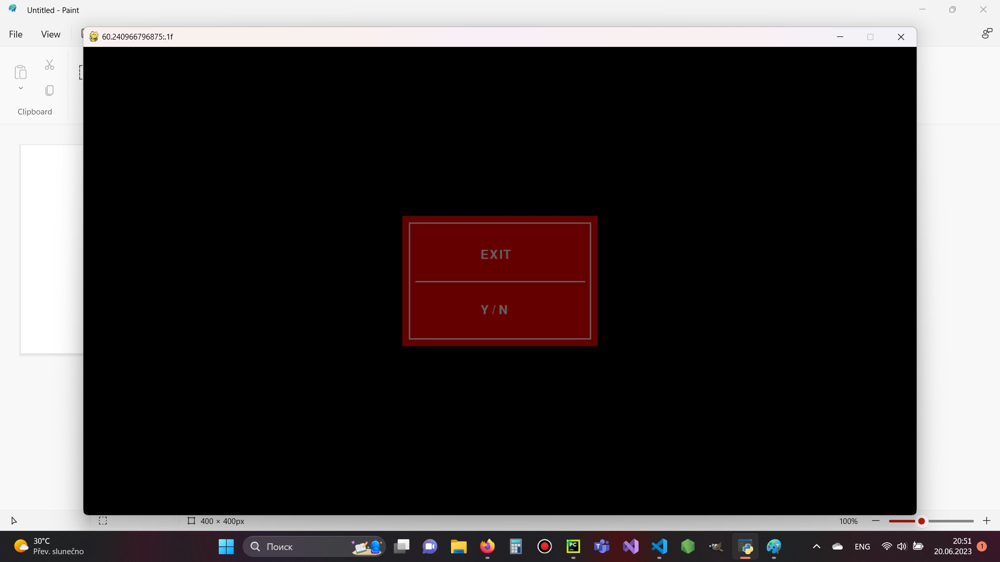
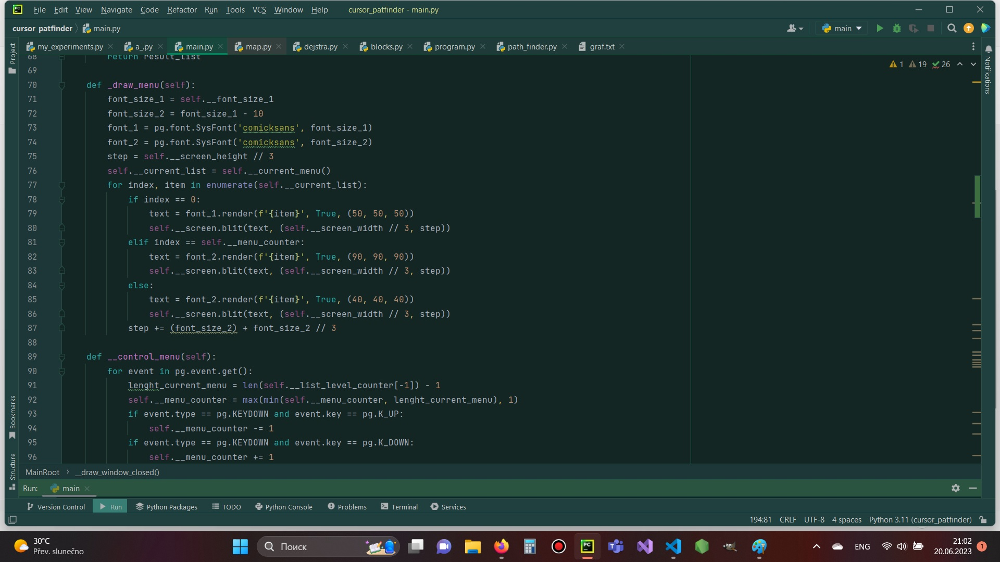
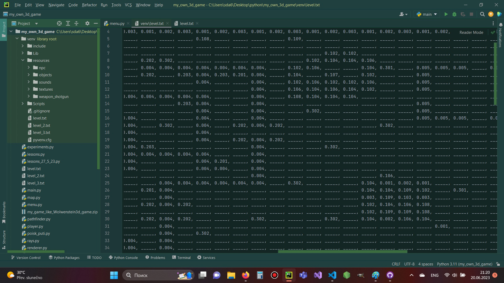
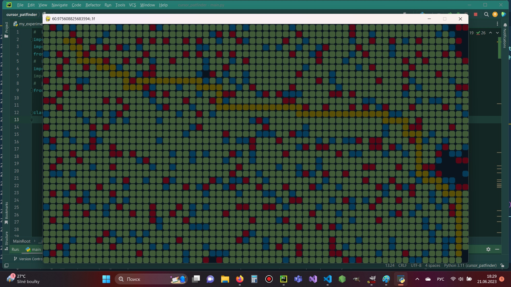
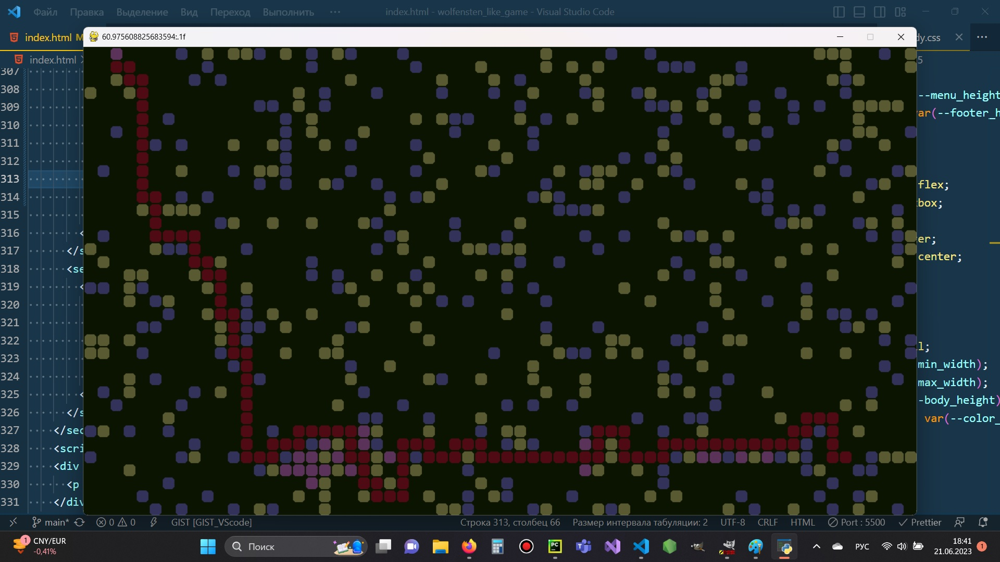

Dmytro Svintsov
I am liaving in Prague (Chech republick). I am working in AutoKelly main storage. I am learning programming. I like crecte different computer games. I like use hard algoritms.
my fbookI am liaving in Prague (Chech republick). I am working in AutoKelly main storage. I am learning programming. I like crecte different computer games. I like use hard algoritms.
my fbookВыше скрин из пайтона. Алгоритм меню я придумал сам. За идею взял, что нажимаея на клавиши мы прибавляем если двигаемся вверх или отнимае, если двигаемся вниз - еденицу у счетчика перемещения внутри текущего меню
А само меню представляет собой оттедельный клас, который создаеся при запуске программы. В случаее текущего проэкта я создавал класс меню при нажатии на клавишу с определенным айди.
Для самого меню я создаю список по определенным правилам!! Например для пайтона для меню которое может запускать три программы я создал такой список
def __get_menu_list(self): return ['Главное меню:', ['Поиск пути', {'Алгоритм поиска пути в ширину': self.program_pathfinder}, {'Алгоритм Dejstra': self.program_dejctra}, {'Алгоритм А*': self.a_manhatten}], {'Выход': self.__quit}]
В моем алгоритме все просто, надо придерживатся правил: первый элемент списка - всегда его оглавление если список отображается, и если это встроенное меню, как в приме выше, то этот элемент отображается как элемент текушего списка, в словаре или объекте js я храню саму программу, точнее такой пример {name: 'Pogram', progran: 'this.program', difficult: 'other paramenters of program'}. Как видите при нажатии клавиши ввод когда наш счетчик совпадает с элементом списка, мы запускаем программу, которая тоже является элементом класса. Есди же это списко то мы переходим в другое меню. Вложенных меню может быть очень много - сколько хотите.... При нажатии на клавишу сброса я вызываю возврат в главное меню, или если мы находимся в программе, то главная программы запросит разрешение на выход, как в скрине внизу
Все это рендеретися методом класса,.... и к этому я не просто так пришел. Вначале были меню попроще, где использовал запрещенный метод eval . Незнаю почему его так не любят в пайтоне. Еще я юзал методы exec globals,... Короче суть методов в том что я использовал тогда для записи своей позиции специальный список в который добовлял или удалял индексы вхождение в меню и потом я вытягивал эти индексы и строил своее меню... Охххх то было... Но недавно мне пришла замечательная идея, я набрался опыта, в алгоритмах.Я придумал нечто новое: теперь при нажатии клавиши ввод мы просто вырезаем остаток меню, и помещаем его вверх наего списка(стека)... Вы поняли? Это как стопка тарелок, потом когда выхожу из текущего списка я его вырезаю... Все отлично работает и это менее затрано..
А вот собственно и метод для отрисовки, ниже мы видим метод для контроля клавиш меню... Кстати, при запуске программы у моего меню есть переключатель, и он переключается в режим - false = меню не активно. Контроль переходит под управление класса программы что создается при старте.. при выходе из программы мы возращаеся в то самое меню в ту самую позицию, а экзмепляр класса программы - уничтожается.
Ну и собственно забыл добавить что надо держать в узде наш скакунок внтури меню, для этого я стал использовать функцию min & max. Пример в js: this.menu_counter = Math.max(Math.min(this.menu_counter, len), 1); На этом про меню все.
вобще в играх я использую следущую концепцию, как на скрине выше мы видим, что клетке размером 24 на 24 соответсвует своя цифра... Это карта для текущей игры.... Тоесть каждой цифре соответсвует свой объект, например под цифрой 1 это блок, а под цифрой 9 - позиция игрока на страте.
В pyton который помощнее, я использую хранилище карт снаружи и загружая их по необходимости, из текстовых файлов Вот пример карты для игры в стиле Wolfenstein 3D.
В пайтоне для той карты возможны 100 типов врагов, 100 типов текстур и 100 типов объектов для карты.. В случаее джава скрипта - там все поскромнее, мексимальное количество для неламания карты - это 9 типов объектов!!! всего 9 типов Хотя для текущей игры этого хватает с лихвой, остальные объекты можно добавлять постепенно по мере игры..
Для такого типа миров, очень легко проверять коллизиюю.!!!!! ЭТО ЕЩЕ один выжный алгоритм для всех игр. Да имеено колизия. Короче на страте игры - точнее уровня для текущего уровня создается словарь в пайтоне или объект в джава скрипте. В него записыватеся координаты и значение на карте... Но в джава скрипте я столкнулся струдностями, дело в том что тут меньге типв данных чем в пайтоне. Я придумал новый алгоритм!!!! Да для его реализацтт прищлось создавать методы кодировани и декодирования координат, но он чень простой.
Короче я чтобы не сравнивать списки сравнию числа... Да-да каждой клетке игрвого мира соотвествет число По простому правилу каждая клекта получает уникальный номер... Есть метод как кодирования. например клеткес с координатами (12, 6) соответсвет число 1200 + 6 = 1206, обратно все также декордирается.... и мы получаем наши координаты... Короче когда наш спрайт влезает в зону блока то его не пропускает проверка... И он останавливается. Для врагов я коллизии не делал. Там рабоатет другой алгоритм.
Для создания спрайтов объектов игры я использовал бесплатный растровый редактор Gimp. скажу вам по секрету - он практически для неопытного пользователя не хуже чем фотошоп. К тому же он полностью бесплтаный.
Для примера мы видим, что я создал спрайтовый блок кирпичной. В даной версии игровой программы он не используется. Но если бы использовался то этот блок расчитан на 3 жизни. По умолчанию прорисовывается крайний правый кадр. Я придумал интересный трюк. я умножал количество жизней на координату начала отрисовки кадра в методе канваса drawImage(). Вобще метод с одной стороны очень удобен... в пайтоне такого нету. Он позволяет сразу и маштабировать за потребности картинку.... Но также он капризный, как и весь js к слову...
Пока боле программ для этих целей не использую, в плане освоить бесплтный векторный редактор и редактор для создания музыки и звуков...
Подошли мы к самому интересному. Алгоритом поиска пути очень много. В даной версии программы я использовал поиск пути в ширину, так как переписывал его с пайтона. Этот алгоритм самый простой но в тоже время имеет главный недостаток = он требует много времени на просчет "хода". Для примера посмотрите на следующий кадр из демонстратора Пайтона.
На скрине я включил демонстаор работы этого алгоритма, я немного модернезировал его чтобы он прописовывал свой путь. Голубые и красные клеточки генерируются на старте программы, а желтым показан найденный путь (по кликам мышки). Короче как видно по скрину то зеленым закрашивается все простроство что посетил метод что проходит про графу...
Тоесть для того чтобы попасть из одного края в другой нам пришлось прошерстить все простстраство!!! представляется сколько это вычислений. можно было бы использовать очередь - и по очереди вызывать этот метод для каждого компьютера, но это пока впрееди...
И незабывайте что пайтон и джава скрипт - языки интерпретируемые, очень высого уровня... И по этому очень медленно работают!! Очень медленно. К примеру моя последняя игра что я дулал на пайтоне едвы выдава в конце 40- 60 кадров в секунду... И это на секундочку!! Игра основная на алгоритмах начала 1990 годов!!!!! Тоесть времен когда не было видеокарт. Да я перемедрил с текстурами и объектами... Но... всеже ... тогда мощность процессоров едвы была выше 50-60 МГц. А тут на одном ядре с 3ГГц да современным командами процессора, ведь не только частота процессора влияет на производительность...
Ну да ладно, тут я коснулся такой темы как граф. Дело в том что мы начали проходите важную тему на пайтоне: деревья, двухсвязные спики... Так вот графы стоят после деревьев как правило. Это такие структуры данных где записаны связи узла и ближайших к нему ребер... Короче этот граф еще создавать надо при старте, и если у вас есть уничтожаммые объекты, то пресчитыать его каждый раз после уничтожения объекта и освобождения простратсва.. Именно поэтому я отаказалася пока от версии с уничтожаемыми блоками.
А на этом скрине показан другой улагоритм. алгоритм поиска пути A star. На самом деле он является модификацией другого алгоритма - алгоритма Дейкстра. Суть последнего - что каждому пути прибавляется еще и цена перемещения... Тоесть он ищет еще и самый дешевый маршрут. Допустим нам андо найти маршрут из точки А в точку Б, но он пролегает не только по разным дорогам но и по дорогам с разными ценами. Алгоритм найдет самый оптимальный маршрут.
Этот алгоритм широко используеся в картографических сервисах типа гуглМапс. Но есть его модификация! которая ускоряет роботу алгоритма в несколько раз - это алгоритм Dejkstra A*. Суть его в том что ко всему этому прибавляется эвристика. Это формула которая выбиарестся в зависимости от типа перемещения. Для перемещения по четырем обалстям используют Манхеттенское растояние, для перемещения по 8 облостям растояние Чебышева, а для перемещения не ограниченного сеткой эвклидово растояние... там простенькая форумала, которая улучшает работу алгоритма в несколько раз. результат виден на лицо
В заключение могу расказать еще о других особенностях и планах. Проект забабахал на коленке так как предметом практически не занимался все свое время отдавая пайтону, на который у меня и так не хватает времени. Ро этому долго не занимаясь предметом столкнулся с кучей тродностей. В том числе целую неделю я переписывал свою игру. Я ее практически переписал заново... И имел большие трудности так как првиык к другому языку.. Дело в том джава скрипт показал себя не с лучшей стороны теперь. Он еще более медленный чем пайтон и еще более интерпретируемый. Некоторые его методы теряются в классе. Тоесть при вызовы метода внутри класса - он через одну итерацию цикла потеряет класс из своей области видимости. Тоже самое касается вложенного метода в другой. Потому часть кода требуется писать в функциях, там проблем нету... Это касатеся в первую очередь канваса - полотна на котором все рендеритсся.
У js меньше типов данных. Я не изучал еще тип данных куча на пайтоне. потому написать алгоритм поиска пути А* не смог. Я просто не знаю каким типом данных лучше это отобразить в джва скрипте. Да и вобще у джава скрипта есть еще куча проблем: в том числе невозможность точно сказать, якляется ли объект объектом или другим типом данных, без сложный вычислений... Также я не смог вызвать программу из меню... хотя объект класса создавался!??
Многие из проблем я правда решил, или обошел их другими путями, но неприятный осадочек остался. js выглядит обрубком по сранению даже с ущербный пайтоном. Сразу видно что язык этот узкоспециализированный и для написания логики не очень подходит. Какой либо сложный алгоритм поставит js втупик..
Но на этом проэкте я переписал алгоритм поиска пути в ширину!!! Хотя хоте использовать А*. Но все же я смог! Я сидел до 1. ночи в суботу чтобы это сделать. Потом я прокачался в логике, и немного повторил второй предмет. Узнал некоторые особенности. вобще изначально я хотел написать игру в стиле 3d. но как только стал кодить на js = сразу понял, задача пока не выполнимая, у меня бы нехватило врмени на это, и скорее всего js просто не потянулбы движок и без того довольно перегруженный вычислениями. На этом пока все.